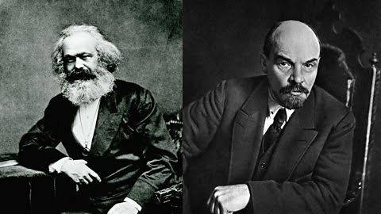

Hyde Park Speakers' Corner is not merely a local landmark in London; it is a global stage where some of the most influential political philosophies, literary critiques, and revolutionary ideas of the modern era were tested and refined. Throughout the late 19th and 20th centuries, this small patch of ground served as a sanctuary for political exiles, visionary authors, and radical thinkers. By stepping onto improvised soapboxes, these individuals engaged directly with the public, shaping discourses that would eventually trigger global revolutions and redefine modern literature.

During his long exile in London, where he spent decades researching and writing Das Kapital, Karl Marx was a frequent visitor to Hyde Park. In the mid-19th century, the park was becoming a hotbed for working-class agitation and protests led by movements like the Chartists and the Reform League. Marx, alongside his close collaborator Friedrich Engels, viewed these gatherings as crucial barometers of revolutionary potential.
While Marx was primarily known for his meticulous research in the reading room of the British Museum, he understood that theory had to connect with the masses. He attended and occasionally spoke at rallies in the park, observing how open-air debates could radicalize the British proletariat. For Marx, Speakers' Corner was a living laboratory where the friction between capitalist structures and working-class demands was openly displayed, reinforcing his theories on class struggle.
Decades after Marx walked the park, another towering revolutionary figure utilized the space to hone his political skills. Vladimir Lenin lived in London in the early 1900s, operating under the pseudonym Jacob Richter to evade the Tsarist secret police while editing the radical newspaper Iskra (The Spark). Lenin was deeply fascinated by British political institutions and spent considerable time observing the dynamics of Speakers' Corner.
Lenin used the park not only to practice his English but also to study the techniques of public speaking and crowd psychology. He admired how speakers could captivate diverse, often hostile audiences without state interference. Lenin occasionally joined the debates, utilizing the open-ended nature of the platform to argue for Marxist internationalism. The lessons he learned regarding rhetoric, agitprop (agitation and propaganda), and direct engagement with the public would later influence his strategies during the Russian Revolution of 1917.
In the mid-20th century, the celebrated essayist and novelist George Orwell brought a different, more critical perspective to Speakers' Corner. Known for his masterpieces Animal Farm and Nineteen Eighty-Four, Orwell was a fierce defender of civil liberties but also a keen observer of human nature and political hypocrisy. He frequented Hyde Park both as a listener and a commentator, writing about his observations in his famous journalism columns.
Orwell viewed Speakers' Corner as an essential safety valve for democracy. He noted that while many of the speeches delivered there were eccentric, radical, or entirely absurd, the fact that the state allowed them to occur without censorship was a profound victory for societal health. However, Orwell also warned against the decay of language and the rise of political orthodoxy, arguing that the true value of Speakers' Corner lay not in the shouting of dogma, but in the rare moments of genuine, intellectually honest dialogue between opposing viewpoints.
The presence of figures like Marx, Lenin, and Orwell at Speakers' Corner underscores the historical importance of physical spaces for dissent. Long before the advent of social media networks and digital forums, these thinkers recognized that the most potent ideas require face-to-face confrontation, immediate feedback, and raw human connection. As we navigate a modern landscape defined by digital Echo Chambers, the legacy of these famous orators reminds us that the fight for free speech is inherently tied to our willingness to stand up, speak out, and face the crowd.
← Back to Home